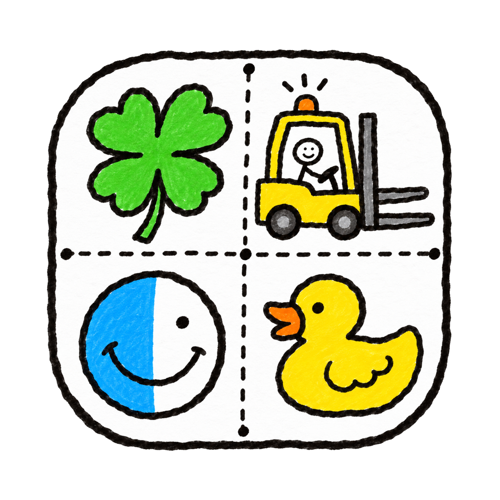

边打边过滤，认拼音首字母
按 f 后立即过滤，1 万个文件也没有延迟。输入 mxcx 就能找到「模型查询.txt」。
过滤 mxcx
模型查询.txt
面向消息传递.md
三栏并排，光标停在哪，就预览哪。单键操作，拼音首字母过滤，空闲内存 58 MB。
空闲内存占用，访达是 183 MB，约三分之一。
进入有 1 万个文件的目录，到画出第一帧。
| 项目 | goFinder | 访达 |
|---|---|---|
| 空闲内存 | 58 MB | 183 MB |
| 空闲 CPU | 0.08 s（约 0.1%） | 0.22 s（约 0.4%） |
| 1 万个文件：内存 | 71–72 MB | 约 240 MB |
| 1 万个文件：CPU | 约 0.4 s，从启动到显示 | 1.3–2.1 s，打开后 10 秒内 |
| 启动 | 冷启动 530–550 ms | 新窗口 294–312 ms |
冷启动比访达开新窗口慢约 0.2 秒：访达是系统应用，常驻后台，没有冷启动。界面朴素是因为一切从省出发：不用 WebView，不加载系统文件图标，只给屏幕上看得到的文件夹开文件监听，Quick Look 等光标停下来才生成预览。
按 f 后立即过滤，1 万个文件也没有延迟。输入 mxcx 就能找到「模型查询.txt」。
c 复制，v 粘贴，d 移到废纸篓，n 新建，↩ 重命名。键位按英语四级水平设定，按 ? 打开速查表，全部可改。
个人收藏、位置跟随访达，另有自己的收藏夹，在多台 Mac 间经 iCloud 同步。
左右或上下双栏；整理文件时先放进暂存架；工作区记住布局和各窗格的文件夹，数字键切换。
压缩包像文件夹一样进入，复制出来即解压；仓库里改动过的文件标上 M、A、? 。
在当前文件夹启动 Claude 等命令行 Agent；t 开终端，e 开编辑器，空格调用系统 Quick Look 预览。
不用习惯 Vim 键位。⌘↓ 打开，⌘↑ 上级。
边打字边过滤，支持拼音首字母。
系统 Quick Look：PDF、Office、视频、图片。
单栏时进出侧边栏。
⌘C ⌥⌘C ⌘X ⌘V 同样可用。
先确认，从不永久删除。⌘⌫ 同样可用。
⇧⌘N 与 ⌘N 同样可用。
选中后直接改。
输入路径，带补全。⌘L 同样可用。
在当前文件夹打开。
s 暂存选中项，s s 收藏当前文件夹。
对话框与切换。⌘1–9 同样可用。
只有 c c、n n、s s 是同一个键连按两下（400 ms 内），其余都是单键。 按 ? 打开速查表，在设置（⌘,）的「快捷键」页可以改键。
完整键位表sudo xattr -r -d com.apple.quarantine /Applications/goFinder.app
在 GitHub Releases 下载 .dmg，把 goFinder 拖进「应用程序」文件夹。目前只有 Apple Silicon 版本。